À propos
Je m'appelle Titouan et je suis étudiant en B.U.T Métiers du Multimédia et de l'Internet.
Passionné par les univers visuels et artistiques, je m'intéresse particulièrement à la manière
dont l'image peut traduire une émotion, construire une identité ou raconter une histoire. La musique,
l'art contemporain, la photographie et le cinéma occupent une place importante dans mon quotidien et
nourrissent ma sensibilité créative.
À travers mes projets, j'explore le graphisme et l'audiovisuel en cherchant à développer mon regard,
expérimenter de nouvelles approches visuelles et construire progressivement mon propre univers.
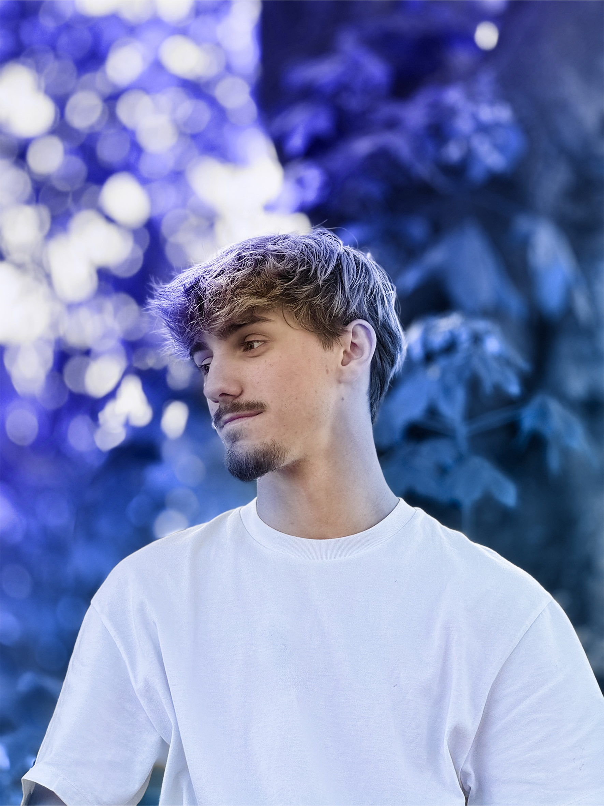
Formation
- BUT MMI - IUT de Rouen, campus d'Elbeuf | Sep 2025 - Actuel
1re année - Création Numérique, Audiovisuel, Développement Web - Baccalauréat - Lycée Georges Dumézil, Vernon | Sep 2022 - Juin 2025
Obtention du BAC : Arts Plastiques, AMC et NSI (Mention ASSEZ BIEN)
Certifications
- BNSSA (Brevet National de Sécurité et de Sauvetage Aquatique)
OXYGENE FORMATION 75 | Jan 2025 - PSE1 (Premiers Secours en Équipe de Niveau 1)
OXYGENE FORMATION 75 | Oct 2024
Expériences
- Surveillant de baignade (BNSSA)
Piscine Sideal | Pont-Saint-Pierre | Août 2025 & Août 2026 - Stage d'observation - CLEOR (Marketing et Communication)
EVREUX | Jan 2022
Compétences
 CSS
CSSProjets
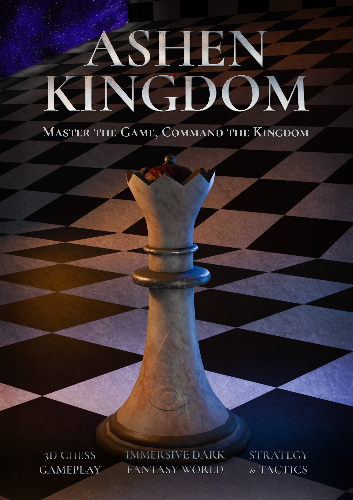
Affiche - 3D
Ashen Kingdom
Réalisée sur Blender et Photoshop, cette affiche présente un jeu d’échecs fictif inspiré de l’esthétique dark fantasy des années 2000. À travers la modélisation, les textures et l’éclairage, j’ai imaginé un univers médiéval sombre et mystérieux. Ce premier projet Blender m’a permis d’explorer les différentes facettes de la 3D.
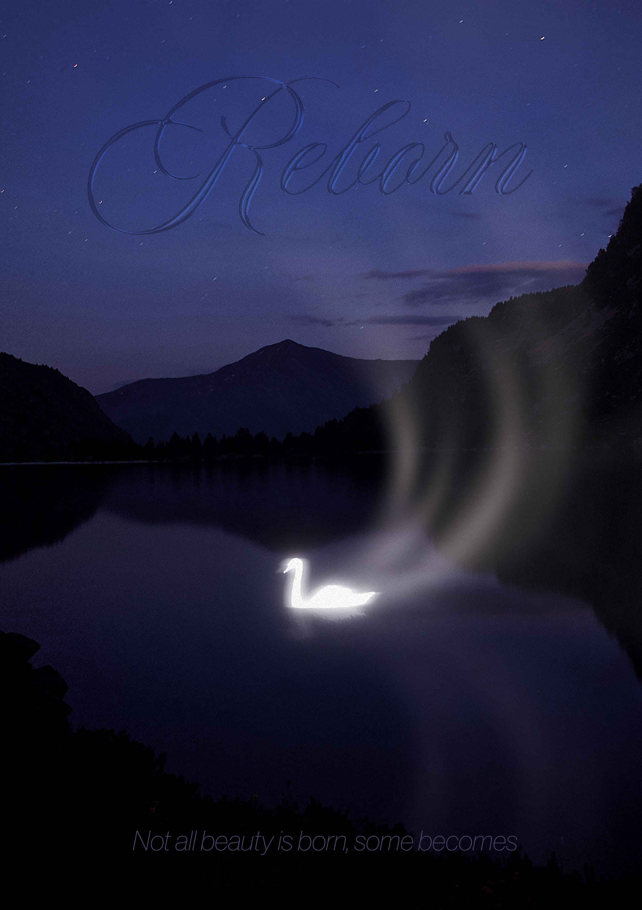
Affiche
Reborn
Réalisé sur Photoshop, ce visuel illustre l'évolution du cygne, passant d'un jeune oiseau discret à un cygne élégant et majestueux. La lumière renforce l'idée de renaissance et met en valeur le sujet principal.
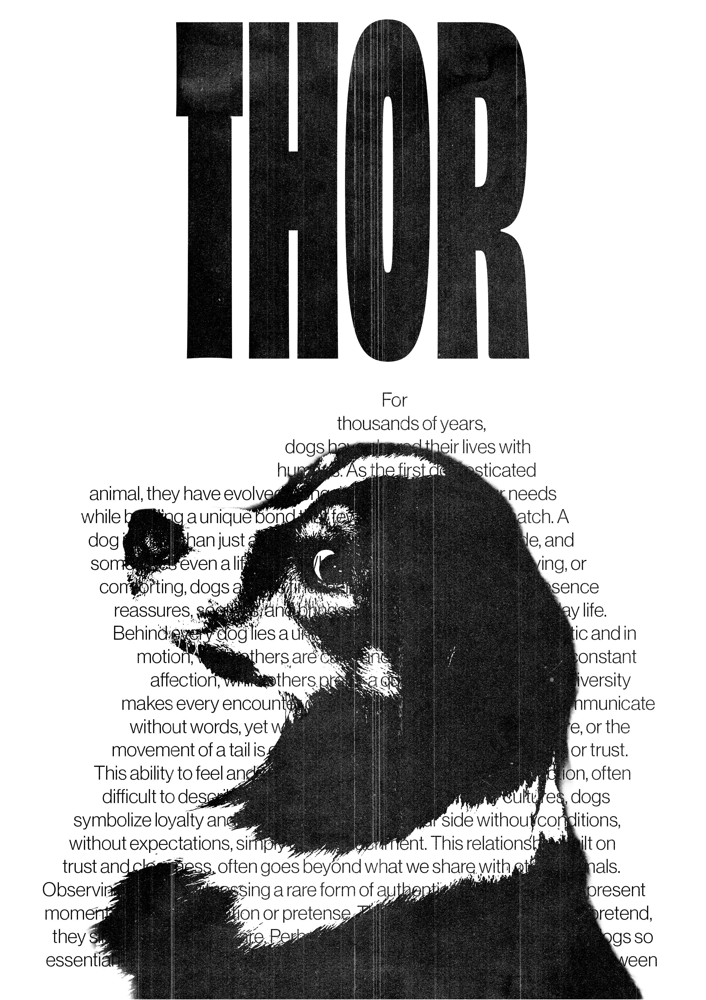
Affiche
Thor
Réalisé sur Photoshop, ce visuel expérimente les modes de fusion et le travail des contrastes. L'intégration d'un texte à travers les zones claires de l'image crée un rendu graphique original et dynamique.
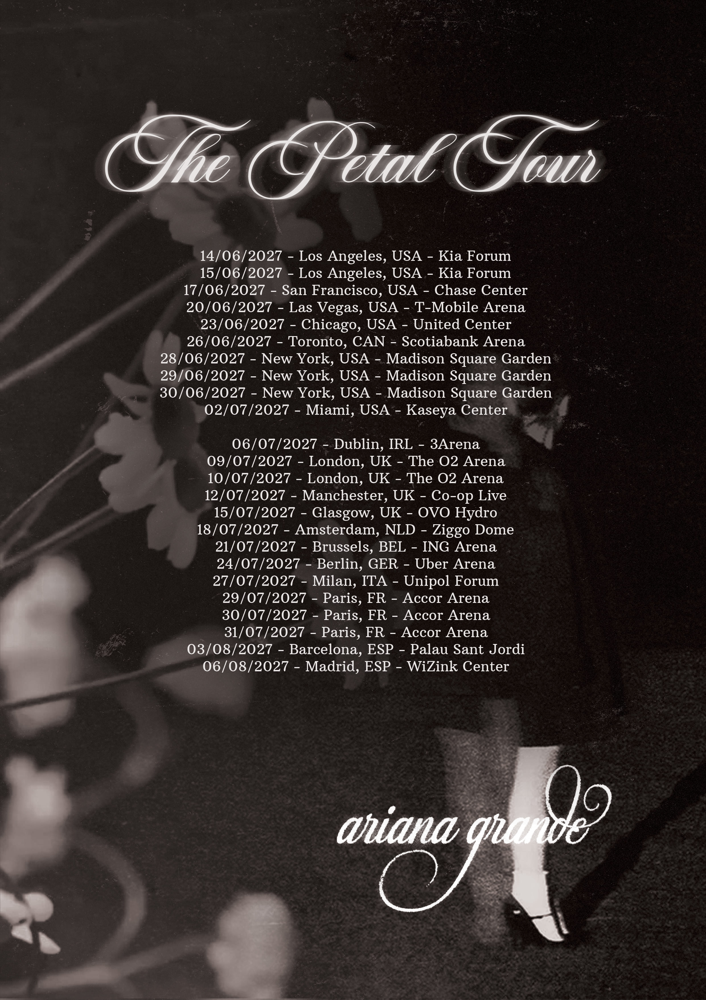
Affiche promotionnelle
The Petal Tour
Réalisée sur Photoshop, cette affiche imagine une tournée fictive intitulée “The Petal Tour”, en reprenant fidèlement la direction artistique de l’album Petal de Ariana Grande. Elle s’appuie sur ses codes visuels (typographie, monochrome, textures vintage) pour proposer un support promotionnel cohérent et crédible.
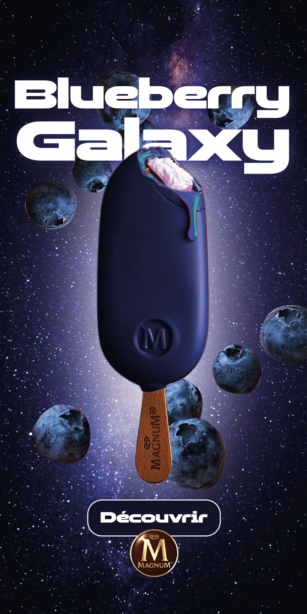
Bannière web
Magnum Blueberry Galaxy
Réalisée sur Photoshop, cette bannière publicitaire pour Magnum revisite la marque dans un univers spatial et futuriste. On y retrouve un travail de retouche basé sur les modes de fusion et des ajustements de couleurs.
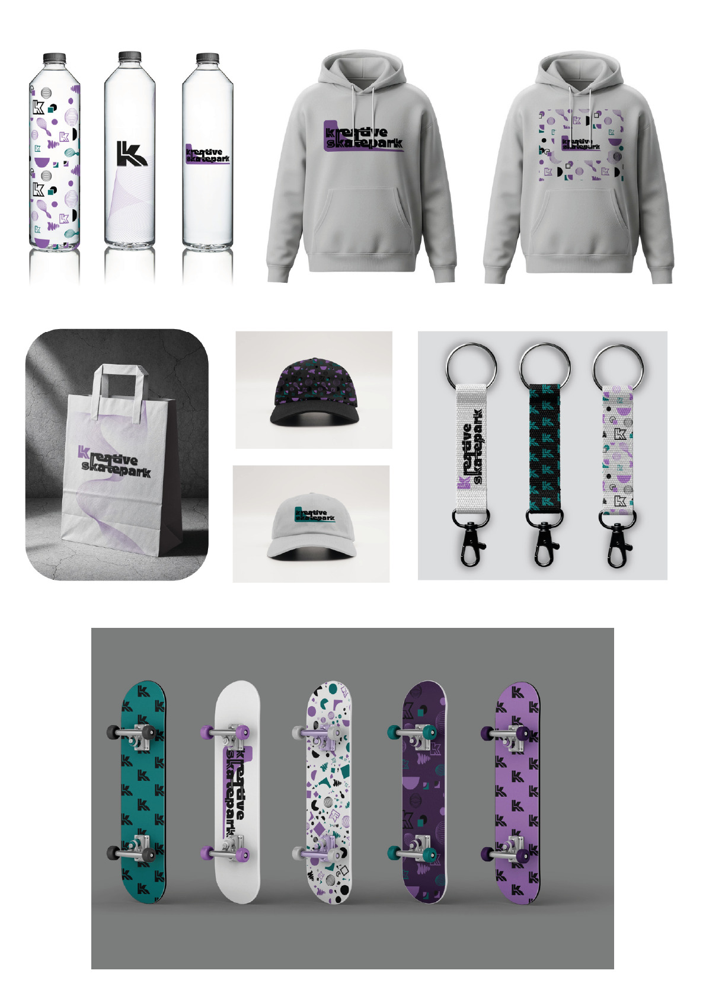
Charte graphique
KreativeSkatePark
Création de l'identité visuelle d'un skatepark mettant en avant l'expression artistique et l'interaction sociale. Le projet comprend la conception du logo, de la charte graphique, d'un univers visuel ainsi que plusieurs supports de communication (affiches, brochure, goodies).
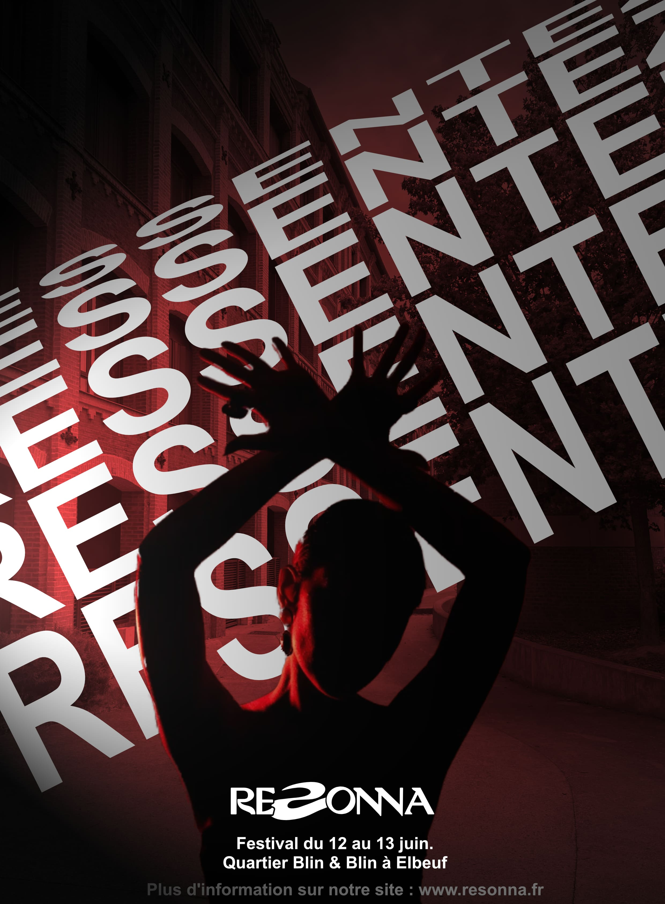
Charte graphique
Resonna
RESONNA est un festival fictif de danse contemporaine imaginé pour valoriser le patrimoine industriel du quartier Blin à Elbeuf. Le projet consiste à concevoir son identité globale, du nom à l'univers visuel et aux supports de communication, en s'inspirant du dialogue entre mouvement, mémoire et espace urbain.
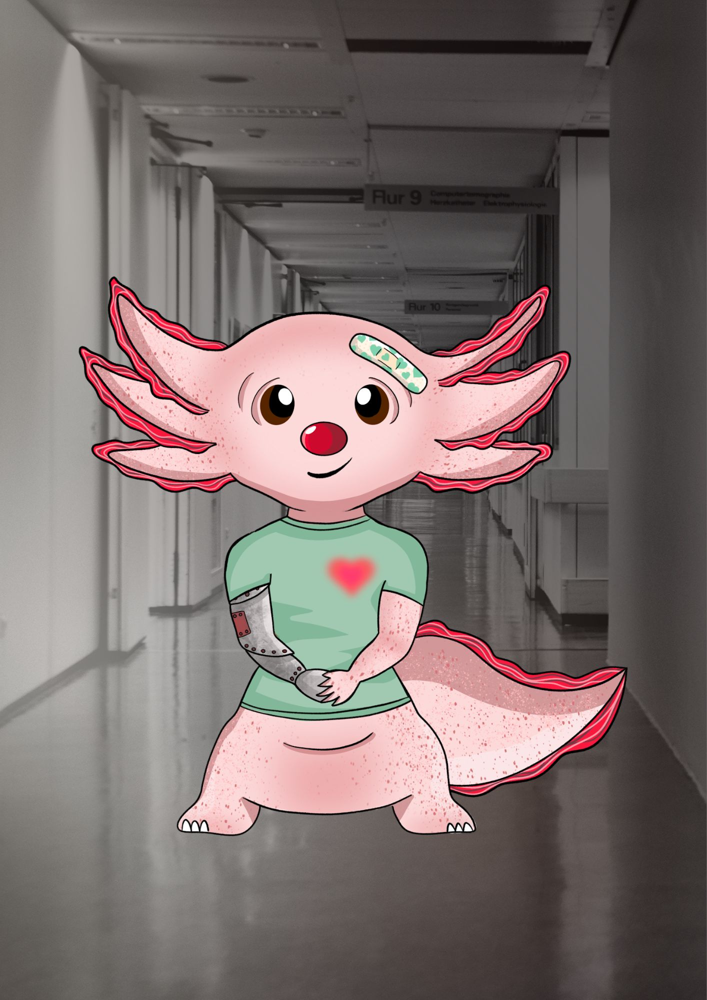
Mascotte
Le Rire Médecin
Conception d'une mascotte pour l'association "Le Rire Médecin", incluant l'identité visuelle, le storytelling et la réflexion autour de son intégration dans l'univers hospitalier.
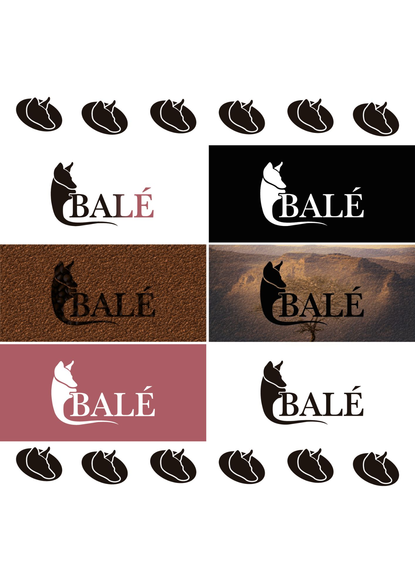
Identité visuelle
BALÉ
Création d'une petite identité visuelle pour une marque de café inspirée du massif du Balé en Éthiopie. Le logo s'appuie sur le loup d'Abyssinie, dont la forme évoque une graine de café, afin de proposer une identité simple, cohérente et distinctive.
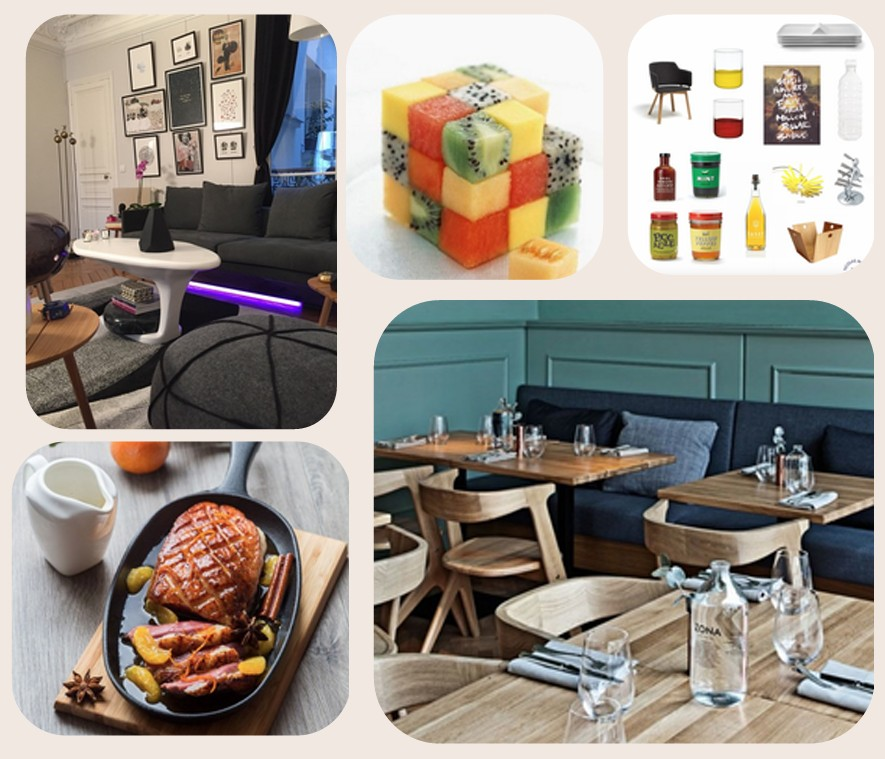
Communication
Ticolas ArtFoodStudio
Recommandation marketing réalisée en équipe pour Ticolas Market. Le projet comprend une analyse de la marque, la conception de personas, une identité visuelle, une maquette de site web et une stratégie réseaux sociaux. J'ai réalisé le spot radio notamment le montage audio.
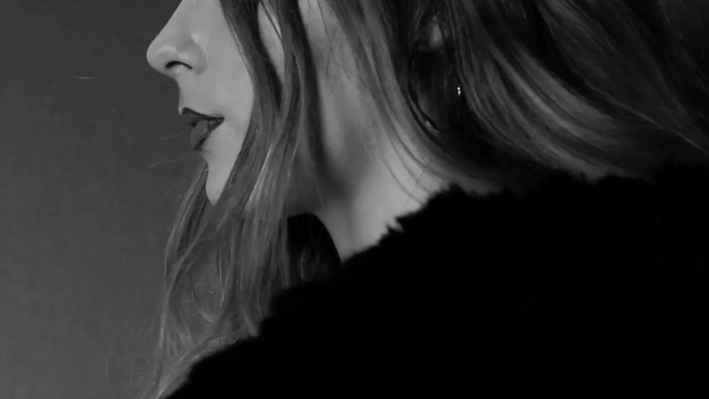
Film Noir
Marlow & The Lady
Court métrage réalisé en équipe autour de l'esthétique du film noir. Le projet explore les codes du genre : ambiance, lumière et narration visuelle.
J'ai assuré la captation image et son lors du tournage, ainsi que le montage sur Adobe Premiere Pro. J'ai également travaillé sur l'ambiance sonore et la
colorimétrie afin de renforcer l'identité visuelle et narrative du film.
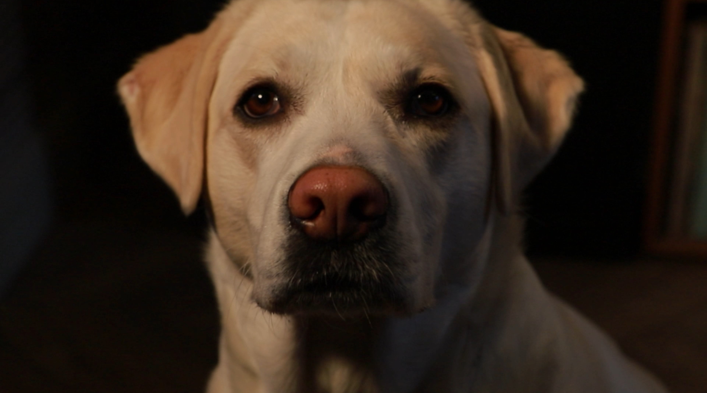
GreenAwards2026
La Poubelle ne mange pas n'importe quoi
Court métrage réalisé en équipe pour le festival Green Awards (#FilmeTaPoubelle), autour du tri des déchets.
L'idée repose sur un parallèle entre un chien et une poubelle pour questionner les habitudes du quotidien de façon simple et visuelle.
J'ai contribué à l'idée de base, à la réflexion des plans, à l'enregistrement sonore (en binôme), ainsi qu'au montage et à la colorimétrie sur Adobe Premiere Pro.
Le projet adopte une approche réaliste et minimaliste pour faire passer un message écologique clair.
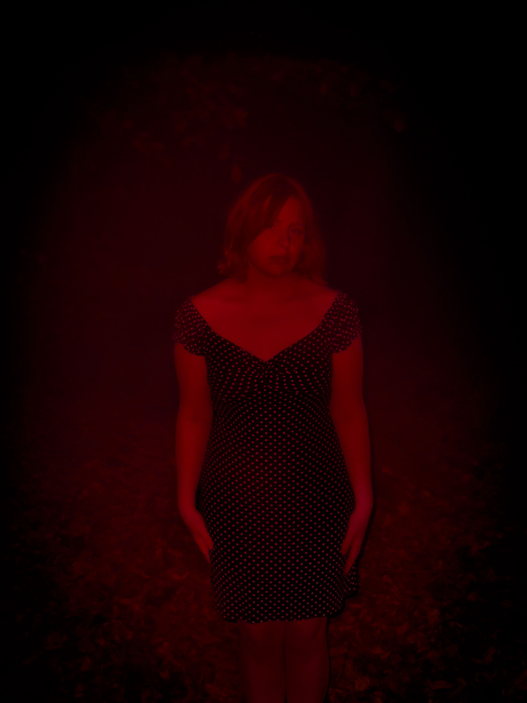
Canon EOS 350D
Missing
Ce shooting photo explore une ambiance nocturne inspirée des
univers paranormaux. À travers des jeux de lumière ciblés, des cadrages atypiques et une mise en scène en forêt,
le projet brouille la frontière entre rêve et cauchemar. Le personnage, accompagné d'un vieil ordinateur portable,
évolue dans un environnement à la fois inquiétant mais fascinant, où le spectateur est libre d'interpréter son histoire.
Moodboard à la fin
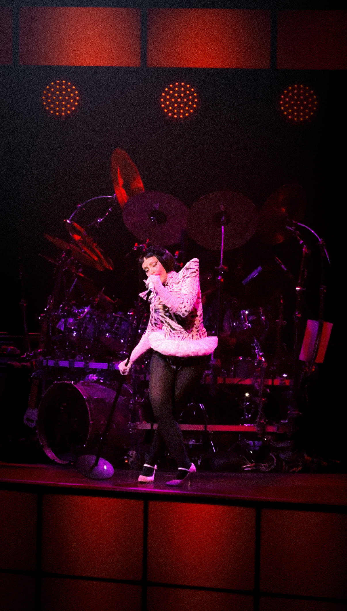
IPhone 16 Pro
Retouche Photo Concert
Cette galerie regroupe des photos issues de concerts, prises depuis les gradins avec un simple téléphone ou extraites de mes vidéos (captures d'écran...). Des fichiers bruts souvent dégradés, flous ou mal exposés. L'objectif : démontrer qu'une retouche maîtrisée sous Lightroom (iphone) peut transformer radicalement une image, même la plus abîmée. Chaque photo est présentée en version originale puis retouchée, révélant tout le travail effectué. Du grain a volontairement été ajouté sur certains clichés pour unifier l'esthétique finale.
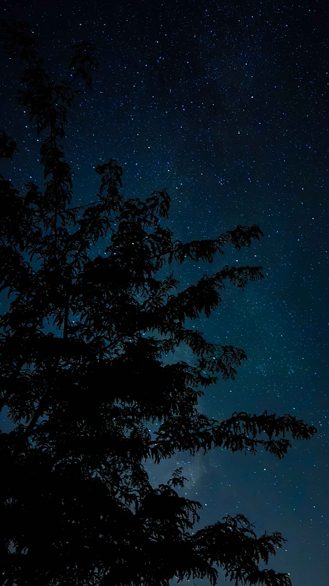
Canon EOS 350D / IPhone 16 Pro
Collection
Une sélection de photos prises au fil du temps, sans thème particulier, juste des moments ou des cadres qui valaient la peine d'être gardés. Parfois à l'iPhone, parfois au Canon, toujours retouchées sur Lightroom pour leur donner le rendu que j'avais en tête.
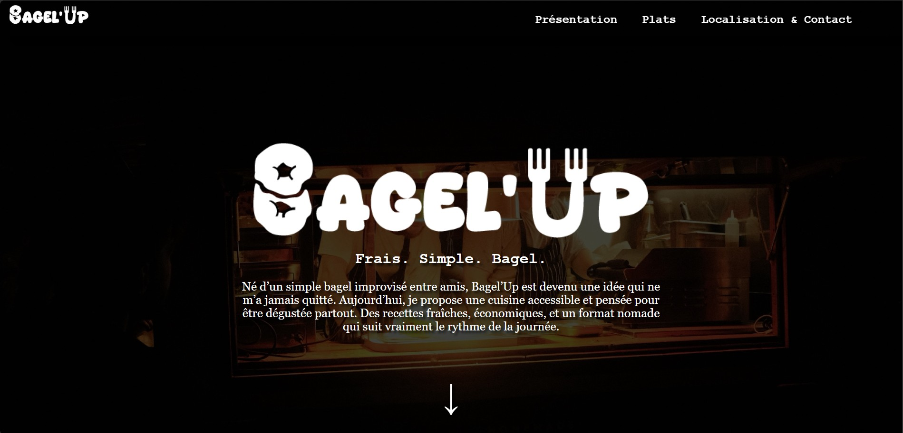
HTML / CSS
Bagel Up
Ce site vitrine fictif pour un food truck de bagels présente l'enseigne, ses produits et ses informations pratiques. Ce projet m'a permis de développer mes bases en intégration web à travers la création d'interactions visuelles et d'une interface complète. Le site n'a cependant pas été conçu en responsive design.
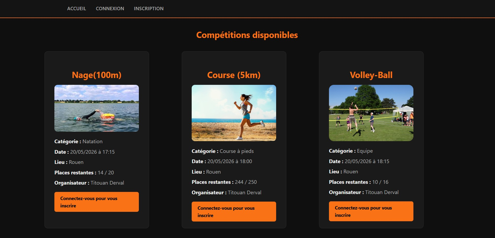
PHP / MySQL / HTML / CSS
Inscription aux compétitions
Ce site de gestion de compétitions sportives permet l'inscription et la connexion des participants et la gestion et consultation des résultats via une base de données. Le projet intègre des fonctionnalités dynamiques, différents rôles utilisateurs et des formulaires. Présenté à travers des captures d'écran accompagnées du code source.